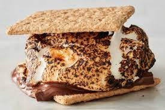

S'mores are a timeless and indulgent treat, beloved for their simplicity and mouthwatering combination of flavors. This campfire classic features a gooey marshmallow, melting chocolate, and crunchy graham crackers, all harmoniously sandwiched together. Whether you're gathered around a campfire or using alternative methods like an oven or stovetop, S'mores promise a sweet and satisfying experience that's reminiscent of childhood adventures
Ingredients List